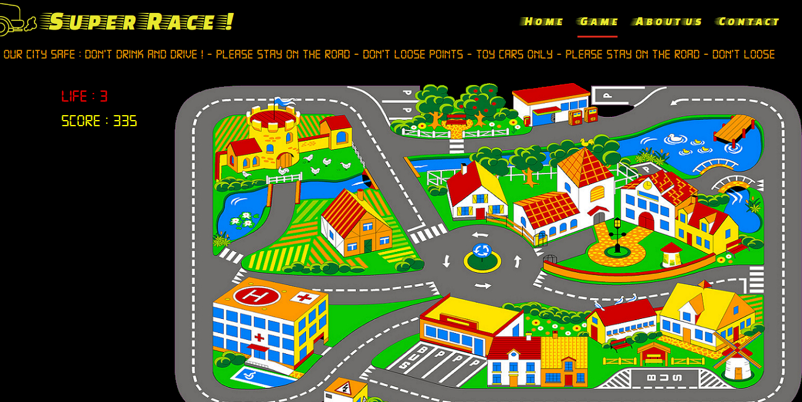
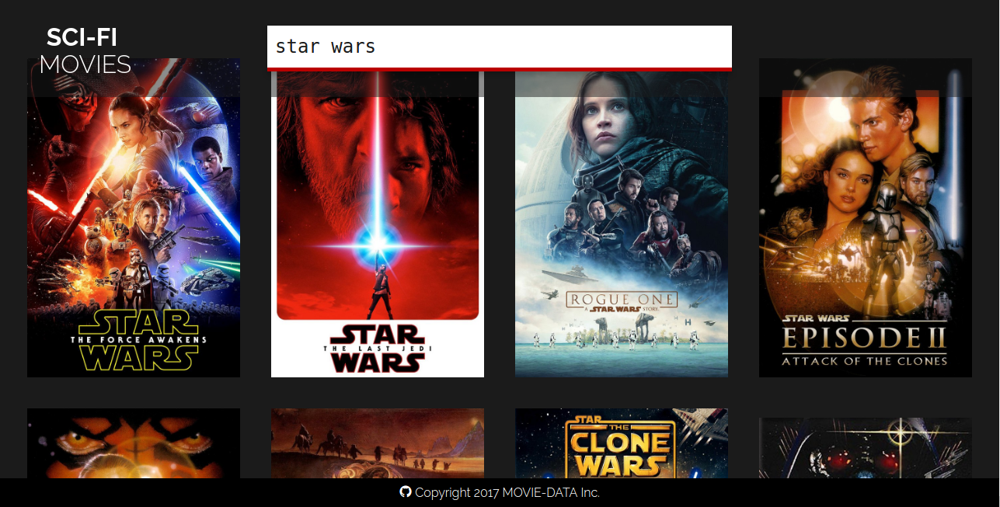
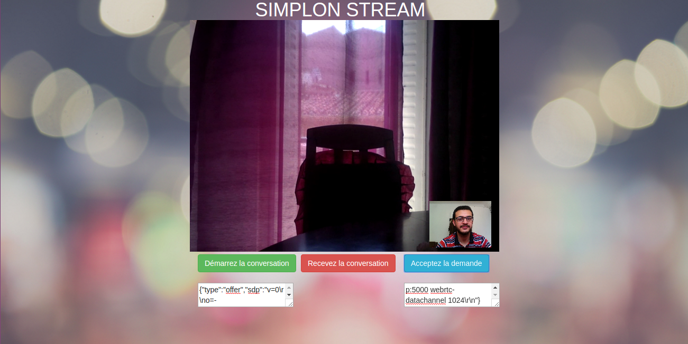
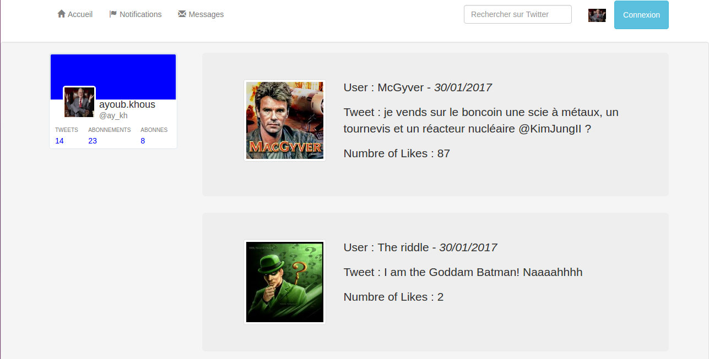
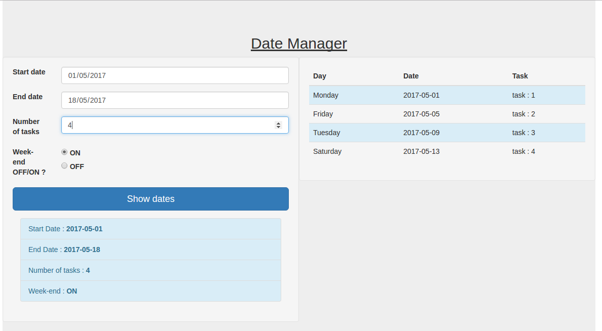
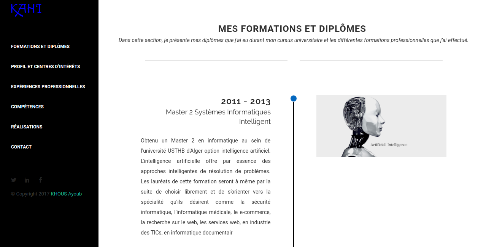
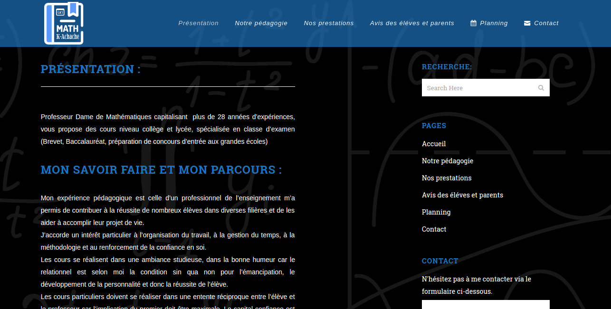
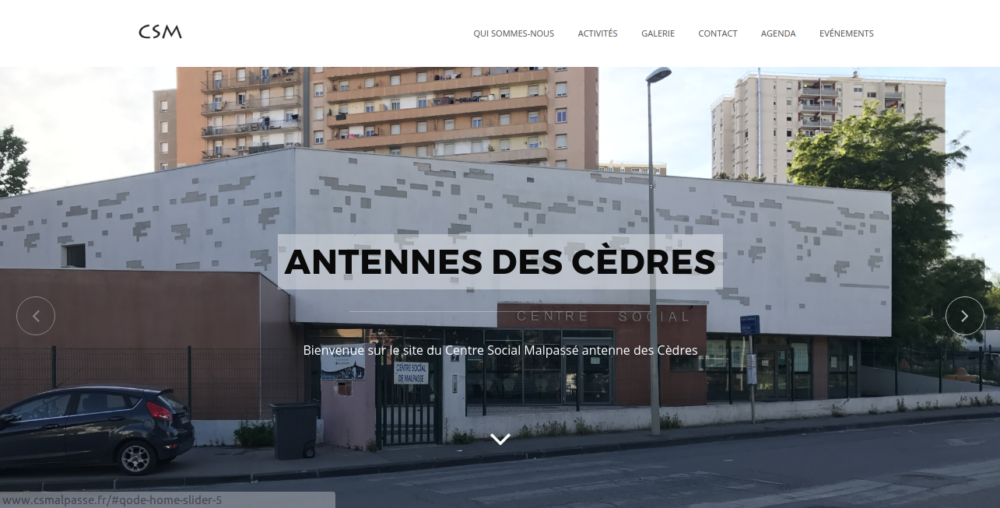

<!DOCTYPE html>

<meta charset="utf-8">
<title>Jury SimplonMars</title>
<!-- Optional: on every page: header and footer -->

<footer>KHOUS Mohamed</footer>

<!-- Your Slides -->
<!-- One section is one slide -->

<section>
  <header>
      Jury final KHOUS Mohamed
  </header>
    <!-- This is the first slide -->
    <h1>Présentation du jury final SimplonMARS Promo 3 2017</h1>
</section>

<section>
  <header>
      Plan
  </header>
  <h3> Plan de la présentation </h3>
        <ul>
            <li  > Présentation de mon parcours jusqu'à SimplonMARS</li>
            <li  > Ce que j'ai appris durant la formation</li>
            <li  > Les projets que j'ai fait pendant la formation</li>
            <li  > Post SimplonMARS </li>
            <li  > Questions </li>
        </ul>
</section>

<section>
  <header>
      Mon parcours
  </header>
  <h3>Présentation et diplôme </h3>
  <ul>
    <li  >Mohamed Ayoub KHOUS 27 ans </li>
    <li  >Marseille </li>
    <li  >Master 2 en Intelligence Artificielle </li>
  </ul>
</section>

<section>
  <header>
      Mon parcours
  </header>
    <h3>Parcours professionnel</h3>
    <ul>
        <li  >I2M informatique
          <ul>
            <li class=" nextdef">société de vente de materiels informatique</li>
            <li class=" nextdef">Commercial</li>
            <li class=" nextdef">4 mois</li>
          </ul>
        </li>
        <li  >Laboratoire Frater-Razes
          <ul>
            <li class=" nextdef">Informaticien</li>
            <li class=" nextdef">Création de logiciels de gestion</li>
            <li class=" nextdef">Delphi/SQLServer</li>
            <li class=" nextdef">Maintenance du parc informatique</li>
            <li class=" nextdef">3 mois</li>
          </ul>
        </li>
    </ul>

</section>

<section>
  <header>
      Mon parcours
  </header>
    <h3>Parcours professionnel</h3>
    <ul>
        <li  >ORAFINA Technologie SSII
          <ul>
            <li class=" nextdef">Développeur</li>
            <li class=" nextdef">Développement d'une application de gestion</li>
            <li class=" nextdef">Finalisation du projet</li>
            <li class=" nextdef">Support technique</li>
            <li class=" nextdef">Delphi/PLSQL</li>
            <li class=" nextdef">8 mois</li>
          </ul>
        </li>
    </ul>

</section>

<section>
  <header>
      Mon parcours
  </header>
    <h3>Arrivé en france</h3>
    <ul>
        <li  >Aout 2015 </li>
        <li  >Reconversion en développement web </li>
        <li  >Formation HumanBooster PHP/Symfony</li>
        <li  >Formation SimplonMARS</li>
    </ul>

</section>

<section>
  <header>
      Ce que j'ai appris à SimplonMARS
  </header>
    <h3>Compétences techniques</h3>
    <ul>
        <li  >Montée en compétences sur les technos du web</li>
        <li  >Apprendre de nouvelles outils
          <ul>
            <li class=" nextdef">Github</li>
            <li class=" nextdef">Méthodologie SCRUM</li>
          </ul>
        </li>
        <li  >Fonctionnement des architectures Server/Client</li>
    </ul>

</section>

<section>
  <header>
      Ce que j'ai appris à SimplonMARS
  </header>
    <h3>Compétences humaines</h3>
    <ul>
        <li  >Collaboration avec des développeurs -Travaille d'équipe- </li>
        <li  >Prise de parole en public</li>
        <li  >Rédaction des rapports</li>
        <li  >Développement d'un réseau professionnel</li>
    </ul>

</section>

<section>
  <header>
      Les projets -Frontend-
  </header>
    <h3>Projet XY</h3>

    <ul>
      <u><h5 style="text-align:center" >Super Race</h5></u><br>
        
    </ul>

</section>

<section>
  <header>
    Les projets -Frontend-
  </header>
    <h3>API Externe -AngularJS- </h3>
    <u><h5 style="text-align:center" >Movies Data</h5></u>
    <ul>
        
    </ul>

</section>

<section>
  <header>
      Les projets -Frontend-
  </header>
    <h3>WebRTC</h3>
    <u><h5 style="text-align:center" >SimplonStream</h5></u>
    <ul>
        
    </ul>

</section>

<section>
  <header>
      Les projets -Backend-
  </header>
    <h3>Php AngularJS</h3>
    <u><h5 style="text-align:center" >Twitter</h5></u>
    <ul>
        
    </ul>

</section>
<section>
  <header>
      Les projets -Backend-
  </header>
    <h3>php fonction</h3>
    <u><h5 style="text-align:center" >Date Manager</h5></u>
    <ul>
        
    </ul>

</section>
<section>
  <header>
      Les projets -CMS-
  </header>
    <h3>Portfolio</h3>
    <u><h5 style="text-align:center" >Site perso</h5></u>
    <ul>
        
    </ul>

</section>
<section>
  <header>
      Les projets -CMS-
  </header>
    <h3>Projet personnel</h3>
    <u><h5 style="text-align:center" >Site web professeur en math</h5></u>
    <ul>
        
    </ul>

</section>
<section>
  <header>
      Les projets -CMS-
  </header>
    <h3>Projet asso</h3>
    <u><h5 style="text-align:center" >Centre social malpassé</h5></u>
    <ul>
        
    </ul>

</section>
<section>
  <header>
      Post SimplonMARS
  </header>
  <h3>Perspéctives aprés SimplonMARS</h3>
    <ul>
        <li  >Passer des entretiens pour des postes en développement web</li>
        <li  >Principalement sur les technologies Backend (PHP)</li>
        <li  >Elargir ma zone de recherche bientôt</li>
        <li  >Pas d'exigence en terme de contrat de travail</li>
    </ul>

</section>
<section>
  <header>
      Questions
  </header>
    <h3>Des questions ?</h3>
    <ul>
        
    </ul>
</section>


<!-- Define the style of your presentation -->

<!-- Maybe a font from http://www.google.com/webfonts ? -->
<link href='http://fonts.googleapis.com/css?family=Oswald' rel='stylesheet'>


<style>
    .nextdef {
        font-size: 1.5rem;
    }

    .nextdef1 {
        font-size: 1rem;
    }

    .h4p2 {
        font-size: 1rem;
    }

    h4 {
        font-size: 1.1rem;
        padding: 0px 10px 0px 10px;
    }

    .footerb {
        font-size: 0.8rem;
    }

    .opensrc {
        float: left;
    }

    html,
    .view body {
        background-color: black;
        counter-reset: slideidx;
    }

    body,
    .view section {
        background-color: white;
        border-radius: 12px;
        font-family: 'Oswald', arial, serif;
    }

    section,
    .view head>title {
        font-size: 2rem;
    }

    .view section:after {
        counter-increment: slideidx;
        content: counter(slideidx, decimal-leading-zero);
        position: absolute;
        bottom: -80px;
        right: 100px;
        color: white;
    }

    .view head>title {
        color: white;
        text-align: center;
        margin: 1em 0 1em 0;
    }

    h1 {
        margin: 120px 0 30px 0;
        text-align: center;
        font-size: 5rem;
    }

    h2 {
        text-align: center;
    }

    section>h3, h4 {
        margin: 50px 50px 40px 50px;
        border-bottom: 0.1px solid;
    }

    pre {
        overflow: hidden;
        font-size: 1.25rem;
        margin: 0 75px 0 75px;
        padding: 10px;
        border: 1px solid;
        font-weight: bold;
        background-color: #F7F7F7;
        width: 80%
    }

    ul,
    ol {
        margin: 40px 100px 0 100px;
    }

    li>ul,
    ol {
        margin: 0 0 15px 50px;
        list-style-image: none;
        /* in case parent list has some */
    }

    mark.next:not([active]) {
        visibility: visible;
        /* override the default behavior where next is hidden */
        background-color: inherit;
        /* and disable highlighting instead */
    }

    p {
        margin: 75px 75px 0 75px;
        font-size: 3rem;
    }

    table {
        margin: auto;
        font-size: 2.5rem;
        text-align: center;
    }

    blockquote {
        height: 100%;
        background-color: black;
        color: white;
        font-size: 3.75rem;
        padding: 50px;
    }

    blockquote:before {
        content: open-quote;
    }

    blockquote:after {
        content: close-quote;
    }
    /* Figures are displayed full-page, with the caption
     on top of the image/video */

    figure {
        background-color: black;
        width: 100%;
        height: 100%;
    }

    figure>* {
        position: absolute;
    }

    figure>img,
    figure>video {
        width: 100%;
        height: 100%;
    }

    figcaption {
        margin: 70px;
        font-size: 3rem;
    }

    header {
        background-color: #F3F4F8;
        border-bottom: 1px solid #CCC;
    }

    footer {
        background-color: #F3F4F8;
        border-top: 1px solid #CCC;
        padding-bottom: 4px;
        /* remember progress bar */
    }

    section footer {
        padding: 10px;
    }
    /* Transition effect */
    /* Feel free to change the transition effect for original
     animations. See here:
     https://developer.mozilla.org/en/CSS/CSS_transitions
     How to use CSS3 Transitions: */

    section {
        transition: left 400ms linear 0s;
    }

    .view section {
        transition: none;
    }

    .view section[aria-selected] {
        border: 5px red solid;
    }

    @media screen {
        /* Before */
        section {
            left: -150%;
        }
        /* Now */
        section[aria-selected] {
            left: 0;
        }
        /* After */
        section[aria-selected]~section {
            left: +150%;
        }
    }
    /* The progressbar, at the bottom of the slides, show the global
     progress of the presentation. */

    #progress-bar {
        height: 4px;
        background: #AAA;
    }
</style>

<!-- {{{{ dzslides core
#
#
#     __  __  __       .  __   ___  __
#    |  \  / /__` |    | |  \ |__  /__`
#    |__/ /_ .__/ |___ | |__/ |___ .__/ core :€
#
#
# The following block of code is not supposed to be edited.
# But if you want to change the behavior of these slides,
# feel free to hack it!
#
-->

<div id="progress-bar"></div>

<!-- Default Style -->
<style>
    * {
        margin: 0;
        padding: 0;
        box-sizing: border-box;
    }

    [role="note"] {
        display: none;
    }

    html {
        font-size: 16px;
    }

    body {
        width: 800px;
        height: 600px;
        position: absolute;
        top: 50%;
        left: 50%;
        overflow: hidden;
        display: none;
    }

    .view body {
        position: static;
        margin: 0;
        padding: 0;
        width: 100%;
        height: 100%;
        display: inline-block;
        overflow: visible;
        overflow-x: hidden;
        /* undo Dz.onresize */
        transform: none !important;
    }

    .view head,
    .view head>title {
        display: block
    }

    section {
        position: absolute;
        pointer-events: none;
        width: 100%;
        height: 100%;
    }

    .view section {
        pointer-events: auto;
        position: static;
        width: 800px;
        height: 600px;
        margin: -150px -200px;
        float: left;
        transform: scale(.4);
    }

    .view section>* {
        pointer-events: none;
    }

    section[aria-selected] {
        pointer-events: auto;
    }

    html {
        overflow: hidden;
    }

    html.view {
        overflow: visible;
    }

    body.loaded {
        display: block;
    }

    .next:not([active]) {
        visibility: hidden;
    }

    #progress-bar {
        bottom: 0;
        position: absolute;
        transition: width 400ms linear 0s;
    }

    .view #progress-bar {
        display: none;
    }

    header {
        text-align: center;
        position: absolute;
        top: 0;
        width: 100%;
    }

    footer {
        text-align: center;
        position: absolute;
        bottom: 0;
        width: 100%;
    }

    .view header {
        display: none;
    }

    .view footer {
        display: none;
    }

    @media print {
        section {
            transition: none;
            transform: none;
            position: static;
            page-break-inside: avoid;
        }
        body {
            overflow: visible;
        }
        #progress-bar {
            display: none;
        }
    }
    /*
   **************************************
   Uncomment the following for 16:9 slides
   **************************************

  html { font-size: 12px; }
  body { height: 450px; }
  .view section {
    height: 450px;
    margin: -140px -200px;
    transform: scale(.3);
  }
*/
</style>

<script>
    var Dz = {
        remoteWindows: [],
        idx: -1,
        step: 0,
        html: null,
        slides: null,
        progressBar: null,
        params: {
            autoplay: "1"
        }
    };

    Dz.init = function() {
        document.body.className = "loaded";
        this.slides = Array.prototype.slice.call($$("body > section"));
        this.progressBar = $("#progress-bar");
        this.html = document.body.parentNode;
        this.setupParams();
        this.onhashchange();
        this.setupTouchEvents();
        this.onresize();
        this.setupView();
    }

    Dz.setupParams = function() {
        var p = window.location.search.substr(1).split('&');
        p.forEach(function(e, i, a) {
            var keyVal = e.split('=');
            Dz.params[keyVal[0]] = decodeURIComponent(keyVal[1]);
        });
        // Specific params handling
        if (!+this.params.autoplay)
            $$.forEach($$("video"), function(v) {
                v.controls = true
            });
    }

    Dz.onkeydown = function(aEvent) {
        // Don't intercept keyboard shortcuts
        if (aEvent.altKey ||
            aEvent.ctrlKey ||
            aEvent.metaKey ||
            aEvent.shiftKey) {
            return;
        }
        if (aEvent.keyCode == 37 // left arrow
            ||
            aEvent.keyCode == 38 // up arrow
            ||
            aEvent.keyCode == 33 // page up
        ) {
            aEvent.preventDefault();
            this.back();
        }
        if (aEvent.keyCode == 39 // right arrow
            ||
            aEvent.keyCode == 40 // down arrow
            ||
            aEvent.keyCode == 34 // page down
        ) {
            aEvent.preventDefault();
            this.forward();
        }
        if (aEvent.keyCode == 35) { // end
            aEvent.preventDefault();
            this.goEnd();
        }
        if (aEvent.keyCode == 36) { // home
            aEvent.preventDefault();
            this.goStart();
        }
        if (aEvent.keyCode == 32) { // space
            aEvent.preventDefault();
            this.toggleContent();
        }
        if (aEvent.keyCode == 70) { // f
            aEvent.preventDefault();
            this.goFullscreen();
        }
        if (aEvent.keyCode == 79 //o
            ||
            aEvent.keyCode == 27 //Esc
        ) {
            aEvent.preventDefault();
            this.toggleView();
        }
    }

    /* Touch Events */

    Dz.setupTouchEvents = function() {
        var orgX, newX;
        var tracking = false;

        var db = document.body;
        db.addEventListener("touchstart", start.bind(this), false);
        db.addEventListener("touchmove", move.bind(this), false);

        function start(aEvent) {
            aEvent.preventDefault();
            tracking = true;
            orgX = aEvent.changedTouches[0].pageX;
        }

        function move(aEvent) {
            if (!tracking) return;
            newX = aEvent.changedTouches[0].pageX;
            if (orgX - newX > 100) {
                tracking = false;
                this.forward();
            } else {
                if (orgX - newX < -100) {
                    tracking = false;
                    this.back();
                }
            }
        }
    }

    Dz.setupView = function() {
        document.body.addEventListener("click", function(e) {
            if (!Dz.html.classList.contains("view")) return;
            if (!e.target || e.target.nodeName != "SECTION") return;

            Dz.html.classList.remove("view");
            Dz.setCursor(Dz.slides.indexOf(e.target) + 1);
        }, false);
    }

    /* Adapt the size of the slides to the window */

    Dz.onresize = function() {
        var db = document.body;
        var sx = db.clientWidth / window.innerWidth;
        var sy = db.clientHeight / window.innerHeight;
        var transform = "scale(" + (1 / Math.max(sx, sy)) + ")";
        db.style.transform = transform;
        db.style.marginTop = -db.clientHeight / 2 + "px";
        db.style.marginLeft = -db.clientWidth / 2 + "px";
    }


    Dz.getNotes = function(aIdx) {
        var s = $("section:nth-of-type(" + aIdx + ")");
        var d = s.$("[role='note']");
        return d ? d.innerHTML : "";
    }

    Dz.onmessage = function(aEvent) {
        var argv = aEvent.data.split(" "),
            argc = argv.length;
        argv.forEach(function(e, i, a) {
            a[i] = decodeURIComponent(e)
        });
        var win = aEvent.source;
        if (argv[0] === "REGISTER" && argc === 1) {
            this.remoteWindows.push(win);
            this.postMsg(win, "REGISTERED", document.title, this.slides.length);
            this.postMsg(win, "CURSOR", this.idx + "." + this.step);
            return;
        }
        if (argv[0] === "BACK" && argc === 1)
            this.back();
        if (argv[0] === "FORWARD" && argc === 1)
            this.forward();
        if (argv[0] === "START" && argc === 1)
            this.goStart();
        if (argv[0] === "END" && argc === 1)
            this.goEnd();
        if (argv[0] === "TOGGLE_CONTENT" && argc === 1)
            this.toggleContent();
        if (argv[0] === "SET_CURSOR" && argc === 2)
            window.location.hash = "#" + argv[1];
        if (argv[0] === "GET_CURSOR" && argc === 1)
            this.postMsg(win, "CURSOR", this.idx + "." + this.step);
        if (argv[0] === "GET_NOTES" && argc === 1)
            this.postMsg(win, "NOTES", this.getNotes(this.idx));
    }

    Dz.toggleContent = function() {
        // If a Video is present in this new slide, play it.
        // If a Video is present in the previous slide, stop it.
        var s = $("section[aria-selected]");
        if (s) {
            var video = s.$("video");
            if (video) {
                if (video.ended || video.paused) {
                    video.play();
                } else {
                    video.pause();
                }
            }
        }
    }

    Dz.setCursor = function(aIdx, aStep) {
        // If the user change the slide number in the URL bar, jump
        // to this slide.
        aStep = (aStep != 0 && typeof aStep !== "undefined") ? "." + aStep : ".0";
        window.location.hash = "#" + aIdx + aStep;
    }

    Dz.onhashchange = function() {
        var cursor = window.location.hash.split("#"),
            newidx = 1,
            newstep = 0;
        if (cursor.length == 2) {
            newidx = ~~cursor[1].split(".")[0];
            newstep = ~~cursor[1].split(".")[1];
            if (newstep > Dz.slides[newidx - 1].$$('.next').length) {
                newstep = 0;
                newidx++;
            }
        }
        this.setProgress(newidx, newstep);
        if (newidx != this.idx) {
            this.setSlide(newidx);
        }
        if (newstep != this.step) {
            this.setIncremental(newstep);
        }
        for (var i = 0; i < this.remoteWindows.length; i++) {
            this.postMsg(this.remoteWindows[i], "CURSOR", this.idx + "." + this.step);
        }
    }

    Dz.back = function() {
        if (this.idx == 1) {
            return;
        }
        this.setCursor(this.idx - 1,
            this.slides[this.idx - 2].$$('.next[active]').length);
    }

    Dz.forward = function() {
        if (this.idx >= this.slides.length &&
            this.step >= this.slides[this.idx - 1].$$('.next').length) {
            return;
        }
        if (this.html.classList.contains("view") ||
            this.step >= this.slides[this.idx - 1].$$('.next').length) {
            this.setCursor(this.idx + 1,
                this.slides[this.idx].$$('.next[active]').length);
        } else {
            this.setCursor(this.idx, this.step + 1);
        }
    }

    Dz.goStart = function() {
        this.setCursor(1, 0);
    }

    Dz.goEnd = function() {
        var lastIdx = this.slides.length;
        var lastStep = this.slides[lastIdx - 1].$$('.next').length;
        this.setCursor(lastIdx, lastStep);
    }

    Dz.toggleView = function() {
        this.html.classList.toggle("view");

        if (this.html.classList.contains("view")) {
            $("section[aria-selected]").scrollIntoView(true);
        }
    }

    Dz.setSlide = function(aIdx) {
        this.idx = aIdx;
        var old = $("section[aria-selected]");
        var next = $("section:nth-of-type(" + this.idx + ")");
        if (old) {
            old.removeAttribute("aria-selected");
            var video = old.$("video");
            if (video) {
                video.pause();
            }
        }
        if (next) {
            next.setAttribute("aria-selected", "true");
            if (this.html.classList.contains("view")) {
                next.scrollIntoView();
            } else {
                var video = next.$("video");
                if (video && !!+this.params.autoplay) {
                    video.play();
                }
            }
        } else {
            // That should not happen
            this.idx = -1;
            // console.warn("Slide doesn't exist.");
        }
    }

    Dz.setIncremental = function(aStep) {
        this.step = aStep;
        var incrementals = Array.prototype.slice.call(this.slides[this.idx - 1].$$('.next')).sort(function(a, b) {
            return Number(a.getAttribute('next-order')) - Number(b.getAttribute('next-order'));
        });
        var next = incrementals[this.step - 1];
        if (next) {
            next.setAttribute('active', true);
        } else {
            this.setCursor(this.idx, 0);
        }
        return next;
    }

    Dz.goFullscreen = function() {
        var html = $('html'),
            requestFullscreen = html.requestFullscreen || html.requestFullScreen || html.mozRequestFullScreen || html.webkitRequestFullScreen;
        if (requestFullscreen) {
            requestFullscreen.apply(html);
        }
    }

    Dz.setProgress = function(aIdx, aStep) {
        var slide = $("section:nth-of-type(" + aIdx + ")");
        if (!slide)
            return;
        var steps = slide.$$('.next').length + 1,
            slideSize = 100 / (this.slides.length - 1),
            stepSize = slideSize / steps;
        this.progressBar.style.width = ((aIdx - 1) * slideSize + aStep * stepSize) + '%';
    }

    Dz.postMsg = function(aWin, aMsg) { // [arg0, [arg1...]]
        aMsg = [aMsg];
        for (var i = 2; i < arguments.length; i++)
            aMsg.push(encodeURIComponent(arguments[i]));
        aWin.postMessage(aMsg.join(" "), "*");
    }

    function init() {
        Dz.init();
        window.onkeydown = Dz.onkeydown.bind(Dz);
        window.onresize = Dz.onresize.bind(Dz);
        window.onhashchange = Dz.onhashchange.bind(Dz);
        window.onmessage = Dz.onmessage.bind(Dz);
    }

    window.onload = init;

    // Helpers
    if (!Function.prototype.bind) {
        Function.prototype.bind = function(oThis) {

            // closest thing possible to the ECMAScript 5 internal IsCallable
            // function
            if (typeof this !== "function")
                throw new TypeError(
                    "Function.prototype.bind - what is trying to be fBound is not callable"
                );

            var aArgs = Array.prototype.slice.call(arguments, 1),
                fToBind = this,
                fNOP = function() {},
                fBound = function() {
                    return fToBind.apply(this instanceof fNOP ? this : oThis || window,
                        aArgs.concat(Array.prototype.slice.call(arguments)));
                };

            fNOP.prototype = this.prototype;
            fBound.prototype = new fNOP();

            return fBound;
        };
    }

    var $ = (HTMLElement.prototype.$ = function(aQuery) {
        return this.querySelector(aQuery);
    }).bind(document);

    var $$ = (HTMLElement.prototype.$$ = function(aQuery) {
        return this.querySelectorAll(aQuery);
    }).bind(document);

    $$.forEach = function(nodeList, fun) {
        Array.prototype.forEach.call(nodeList, fun);
    }
</script>
<!-- vim: set fdm=marker: }}} -->
